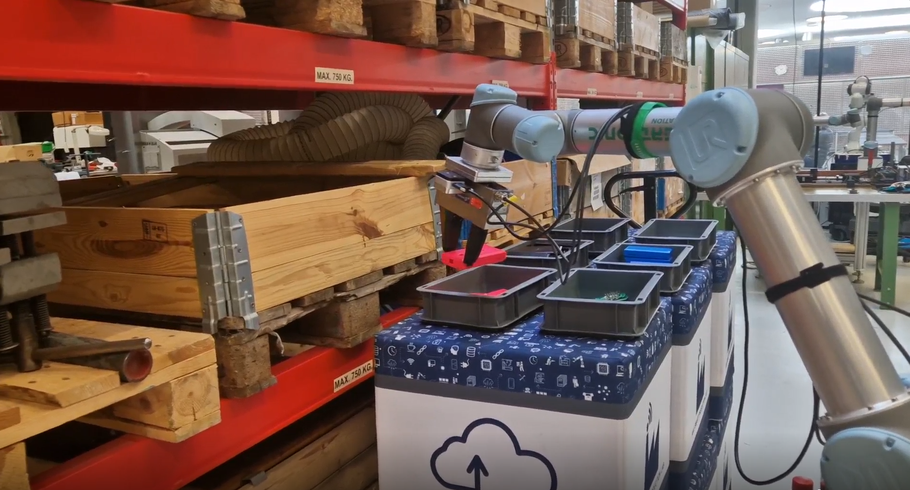
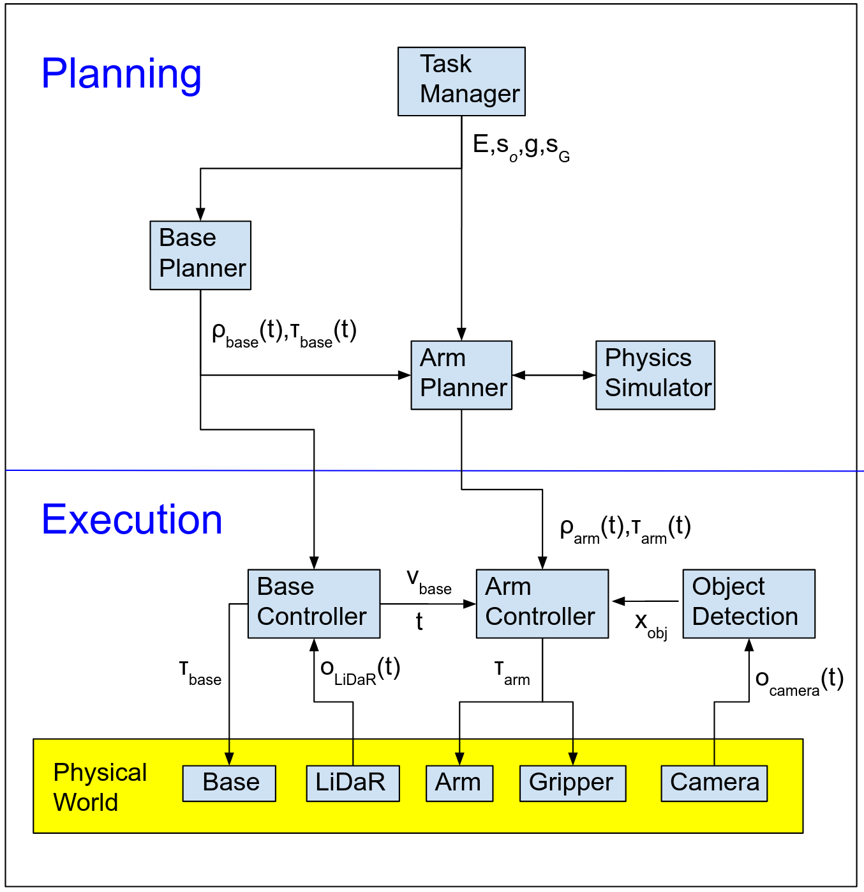

Grasping on the Move
Motion Planning and Visual Servoing for Mobile Manipulation

Overview
Traditional robotic pick-and-place operations typically require a mobile robot to stop and localize itself before performing a manipulation task. This introduces additional delays and reduces the efficiency of mobile manipulation systems, particularly in industrial environments where robots must perform repeated picking and placement operations.
This research investigates grasping on the move, enabling mobile manipulators to identify, approach, and grasp objects while their mobile base remains in motion. By combining motion planning, visual perception, and coordinated control of the robot's base and arm, the framework eliminates the need to stop before performing pick-and-place operations.
Research Challenges
Grasping objects while a mobile manipulator is moving introduces several challenges beyond those encountered in traditional stationary manipulation.
- Precision: The manipulator must accurately position its end effector to successfully grasp an object.
- Timing: The arm must intercept and grasp the object as the mobile base passes within reach.
- Motion uncertainty: The system must accommodate noise and uncertainty associated with movement of the mobile base.
- Environmental changes: The robot must adapt to changes in object location and its surrounding environment.
- Planning efficiency: Planning and execution must be sufficiently fast to support efficient industrial operation.
System Architecture
The proposed framework integrates planning and control for both the mobile base and manipulator, together with a vision-based object detection system. These components work together to identify target objects, navigate toward them, and execute grasping motions while the robot remains in motion.
1. Mobile Base Planning and Control
The base planner and controller use LiDAR sensors to navigate the work environment. The system generates paths that bring the mobile manipulator within reachable distance of objects that need to be grasped.
2. Vision-Based Object Detection
A camera mounted on the robotic arm identifies and localizes target objects. This provides the object position information needed to plan the grasping motion.
3. Arm Planning and Control
The arm planner and controller incorporate both the motion of the mobile base and the estimated object location to generate and execute grasping motions.

Experimental Platform
The framework was implemented and evaluated using a mobile manipulator consisting of a Universal Robots UR5 robotic arm mounted on a Mobile Industrial Robots (MiR) mobile base.
The system was demonstrated on kitting tasks in an industrial environment. These experiments evaluated the ability of the mobile manipulator to identify and grasp target objects while its base was undergoing dynamic motion.

Results and Demonstrations
Experimental demonstrations show that the proposed framework can consistently identify and grasp target objects while the mobile base is moving. The results demonstrate the feasibility of performing manipulation tasks without requiring the robot to stop before grasping.
Video Demonstration
Demonstration of the mobile manipulator performing grasping operations while navigating its environment.
<--Future Research Directions
An important direction for extending this work is incorporating visual servoing into the arm control framework. Visual servoing will allow the manipulator to continuously adapt its motion based on visual observations while accounting for movement of the mobile base.
I also plan to incorporate kinodynamic planning into grasping on the move. This will help ensure that trajectories generated through visual servoing remain collision-free while accounting for the dynamics of the system.
These developments will extend the existing framework to better accommodate uncertainty and improve the reliability of grasping operations in dynamic environments.
Applications
Grasping on the move has potential applications across several areas of robotics, including:
- Industrial automation and manufacturing
- Automated kitting and material handling
- Warehouse and logistics automation
- Home robotics
- Search and rescue robotics
- Space exploration